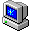
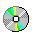

This is where your primary introduction goes. Talk about who you are, what drives you, and what your core values are as a developer/professional.
2024 - Present
• Engineered responsive UI components using custom design layouts.
2022 - 2024
• Maintained legacy platforms and streamlined asset workflows.
An amazing web application built using clean semantic HTML structure and retro design accents.
A fun client-side operating system clone designed to host a professional work history portfolio.